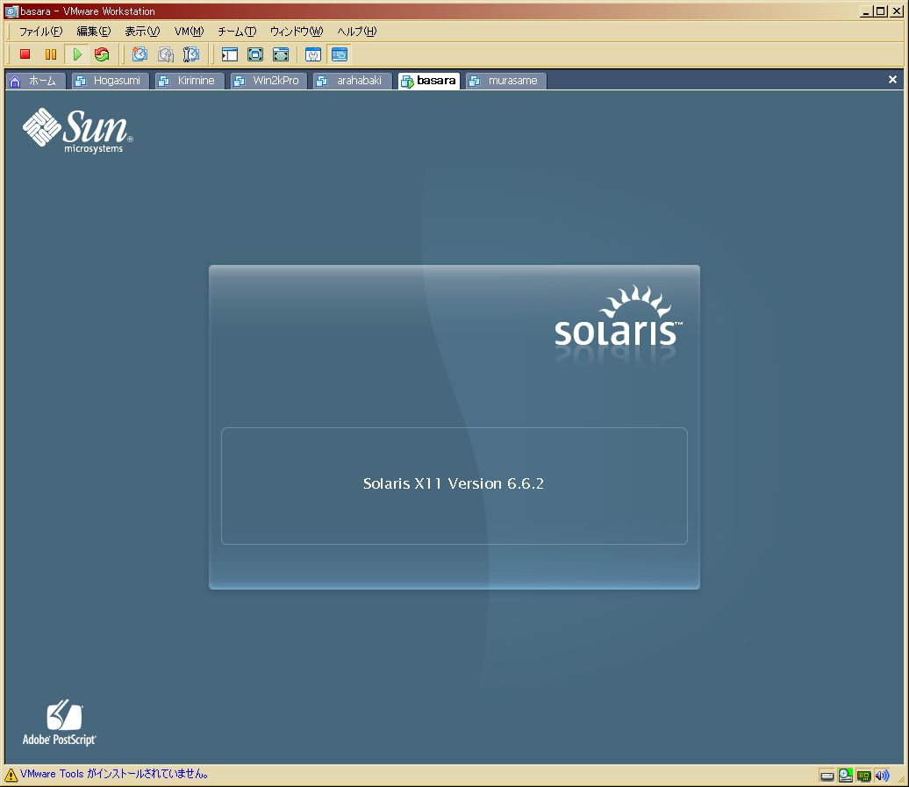

作成日: 2006-11-26 14:04:19 / last updated at: 2008-12-23 14:06:33
カテゴリ: Solaris
カテゴリ: Solaris
Solaris10ですが、今年の7月辺りにお仕事の関係上、自宅のVMwareに入れてみました。
技術/Solaris10インストールメモ 参照です。
まだ件のお仕事は続いているわけですが、自宅でSolaris10で色々実験する時期はとっくに終わっており、暫く起動していませんでした。
で、久しぶりに火を入れてみたのですが・・・グラフィカルログインが非常にウザイです。というわけで。
グラフィカルログインを無効化
まずはコレです。
http://solaris-user.com/solaris_beans/dtlogin.html
これで一発です。
$ su - # /usr/dt/bin/dtconfig -kill # /usr/dt/bin/dtconfig -d
Xを手動で起動する
グラフィカルログインを潰せたものの、Xが無いと不便なときも有ることは間違い有りません。というわけで、細かい経緯は忘れましたが
- コンソールから"kdmconfig"でXを設定
- rootユーザで"/usr/X11/bin/Xserver &"を起動→ディスプレイ番号が":0"に。
- 一般ユーザで"DISPLAY=:0"環境変数を設定
- xfceが入ってたようなので、一般ユーザで適当に"startxfce"を叩いてみる。
という感じで手動でxfceを動かせました。
xfceはバージョン3のようです。とりあえず、Xserverを叩くと結構綺麗な画面が
表示されましたので、記念に貼り付けておきます。

同じ要領で、/opt/sfw/bin/fvwm2が入ってたので動かしてみました。/opt/sfw/etc/xfce/fvwm2rcというのがあったので、試しにそれを使って動かしてみました。
$ /opt/sfw/bin/fvwm2 -version FVWM version 2.4.3 compiled on Jan 5 2005 at 16:35:28 with support for: XPM, GNOME WM hints, Shape, SM $ /opt/sfw/bin/fvwm2 -f /opt/sfw/etc/xfce/fvwm2rc &
多少エラーが出るものの、懐かしきすっぴんのfvwmが立ち上がりました。ただ、fvwm2関連のファイル・ディレクトリ構造がよく掴めて居らず、環境変数周りがおざなりである為かメニューの殆どが正常に動作しませんでした。fvwmのモジュールや、実行ファイルが見つかりません。
手動で起動したXを落とす
最初、SIGHUPを使ってみたのですが自動的に再起動してしまいました。正しいかどうか分かりませんが、SIGINTを送って落とせました。
# kill -INT (XのPID)
original url: https://www.glamenv-septzen.net/view/94